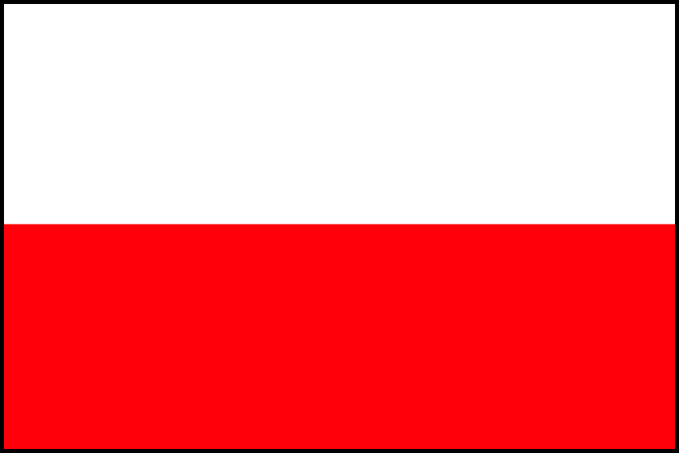

LE COLAZIONI NEL MONDO
tre delle quali da non perdere
_____________________________________________
_____________________________________________
Colazione polacca

La jajecznica, conosciuta come la “colazione"
è composta da kielbasa, famosa
salsiccia del luogo, ser, ossia il formaggio,
(funghi), szynka (prosciutto cotto),
patate e uova strapazzate.
_____________________________________________
Colazione hawaiana
La Loco Moco è la colazione hawaiiana e vive
di elementi facili e veloci da preparare quali
frutta fresca, in particolar modo papaya,
banana, mango ma anche hamburger, uova,
riso e salsa gravy.
_____________________________________________
Colazione danese

Differentemente dalle precedenti
la colazione danese, conosciuta come
“viennoiserie”, presenta un insolito mix
tra dolce e salato che prevede il pane di
Vienna wienerbrod e il porridge ollebrod,
che unisce pane e birra.